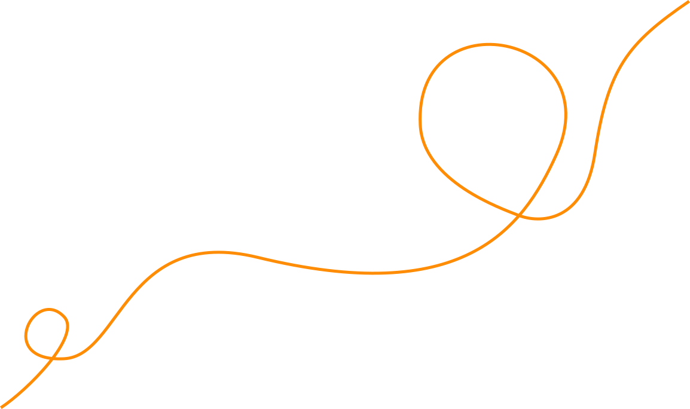
תני לו תנופה
והוא יזנק מעצמו
ספורט טיפולי בהנהלת טובה טייכמאן
ספורט טיפולי לילדים בקבוצות קטנות, עם תוכנית אישית,
צוות מוסמך ומעקב מקצועי לחיזוק היכולות הרגשיות, החברתיות, ההתנהגותיות והמוטוריות בדרך שילדים אוהבים.
טיפול שבועי של 45 דקות, עד 6 ילדים בקבוצה, תוכנית אישית לכל ילד, 5 סניפים ברחבי בית שמש
יחס אישי
וקבוצות מותאמות
ביטחון עצמי ותפקוד יומיומי
שיפור קשב וקורדינאציה
חיזוק שרירים, שיווי משקל ותנועה
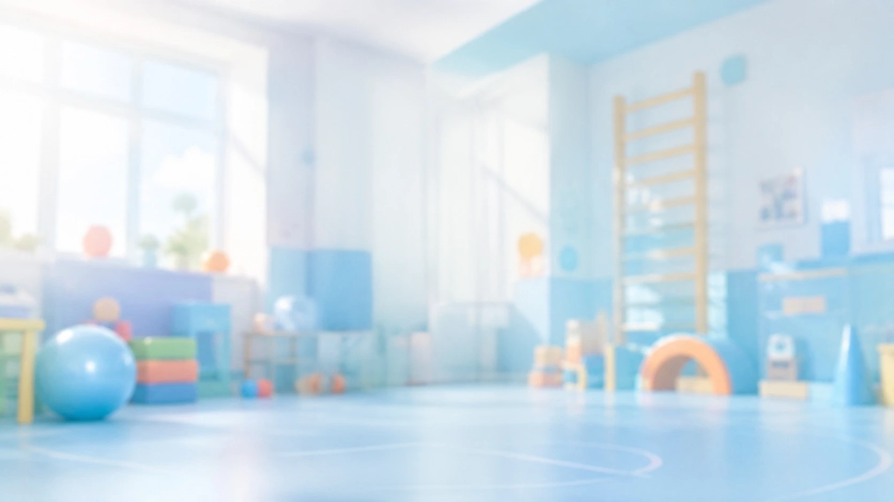
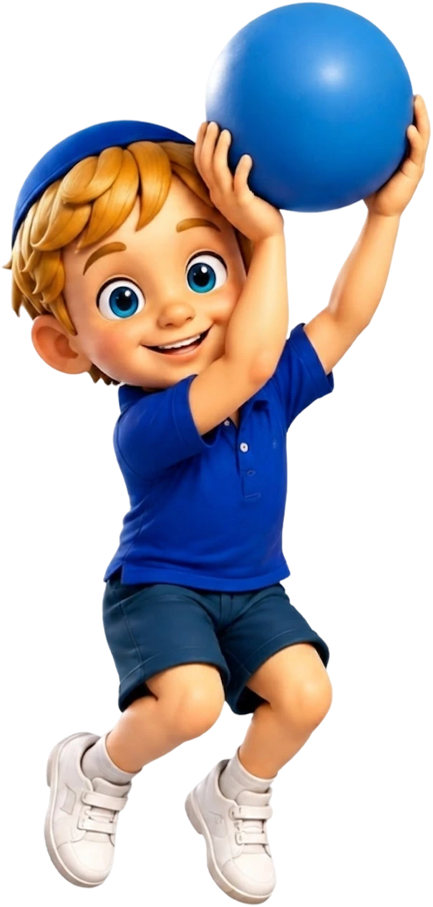
איך הטיפול עובד?
טיפול בתנועה ובחוויה נינוחה
לפעמים קל יותר להתחזק דרך תנועה
לא כל ילד מרגיש בנוח לשבת בחדר ולדבר על מה שעובר עליו.
יש ילדים שמתקשים בוויסות רגשות, בקבלת גבולות או בדחיית סיפוקים. אחרים חווים חוסר ביטחון מול חברים, קושי בהשתלבות בקבוצה או אתגרים מוטוריים כמו קואורדינציה, שיווי משקל ותכנון תנועה.
בקידיספורט אנחנו משתמשות בתנועה, במשחק ובפעילות ספורטיבית כדי לעזור לילדים להתמודד, להתקדם ולהרגיש מסוגלים — בתוך חוויה מהנה שהם מחכים לחזור אליה.
ספורט טיפולי לילדים בקבוצות קטנות, עם תוכנית אישית,
צוות מוסמך ומעקב מקצועי לחיזוק היכולות הרגשיות, החברתיות, ההתנהגותיות והמוטוריות בדרך שילדים אוהבים.
טיפול שבועי של 45 דקות, עד 6 ילדים בקבוצה, תוכנית אישית לכל ילד, 5 סניפים ברחבי בית שמש
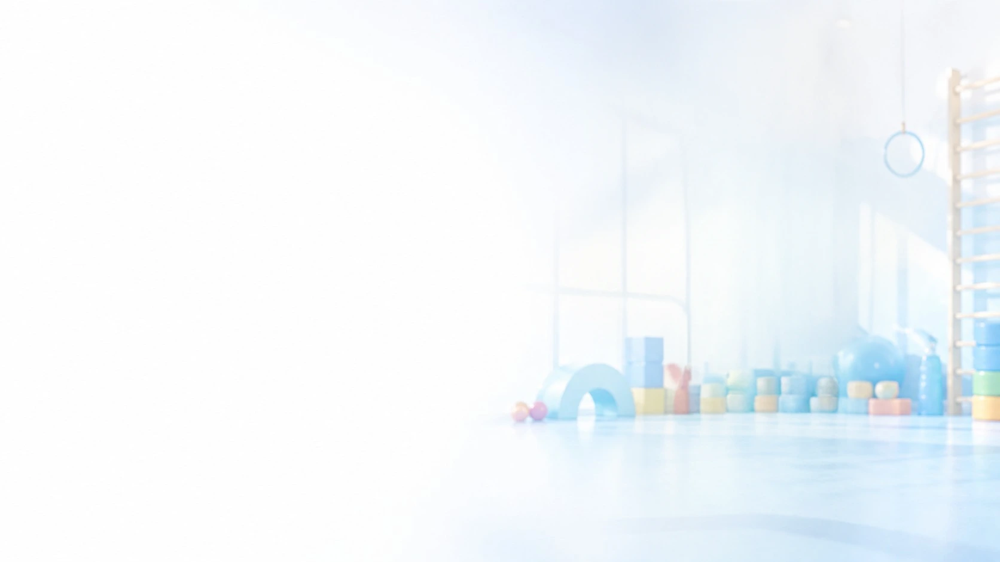
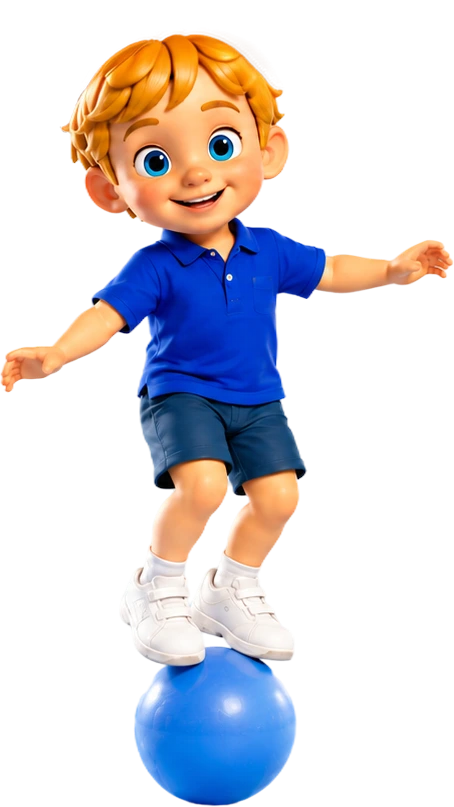
מה זה בעצם
ספורט טיפולי?
ספורט טיפולי הוא תהליך רגשי־התפתחותי המשלב משחק, תנועה ופעילות ספורטיבית כדי לקדם מטרות אישיות אצל ילדים.
מבחינת הילד, הוא מגיע לחוג מהנה ומאתגר. מבחינת הצוות שלנו, מאחורי כל פעילות עומדת תוכנית מקצועית וממוקדת.
חיזוק רגשי
מוטוריקה גסה ועדינה, שיווי משקל, קואורדינציה, דיוק, תכנון תנועה וחיזוק חגורת הכתפיים.
חיזוק מוטורי
מוטוריקה גסה ועדינה, שיווי משקל, קואורדינציה, דיוק, תכנון תנועה וחיזוק חגורת הכתפיים.
חיזוק חברתי
ביטחון מול ילדים אחרים, הבנת סיטואציות חברתיות, תקשורת והשתלבות בקבוצה.
חיזוק התנהגותי
הקשבה, התמדה, קבלת כללים, התמודדות עם משימות ויכולת לנסות שוב.
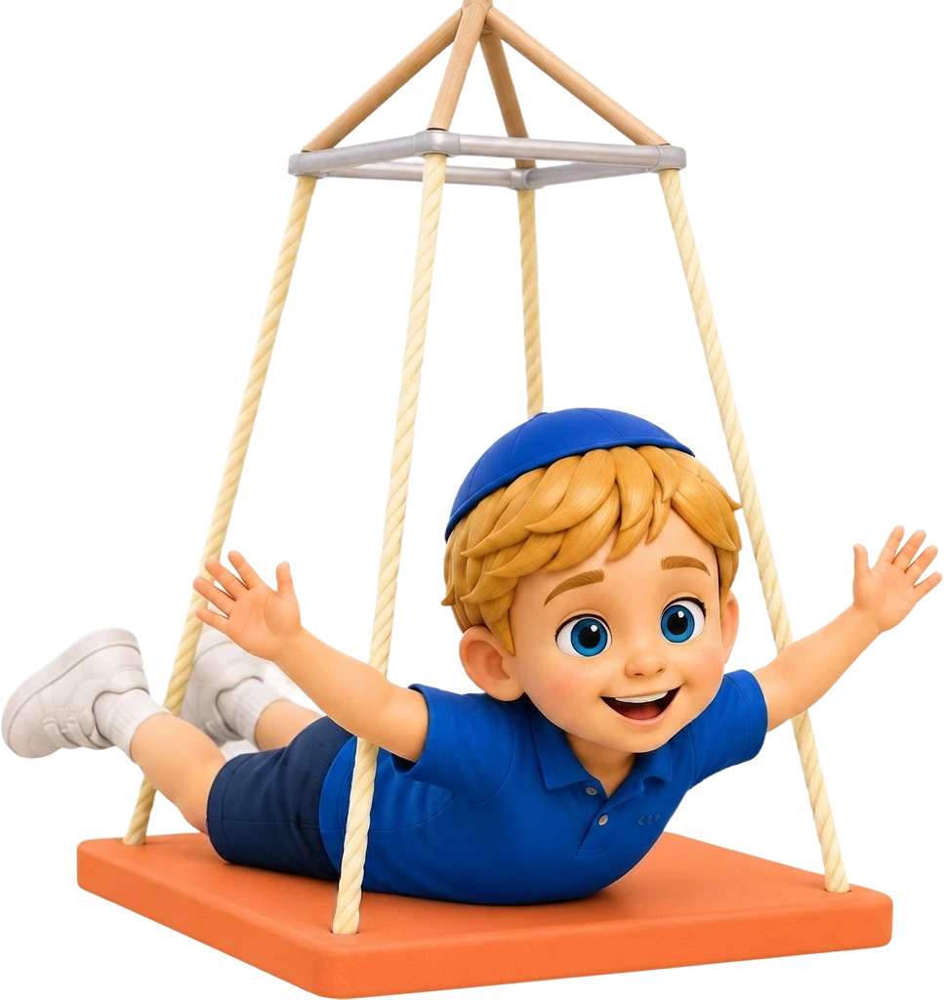
תוכנית אישית בקבוצה קטנה
- הטיפול מתקיים אחת לשבוע, במשך 45 דקות, בקבוצות של עד שישה ילדים.
- לכל ילד נבנית תוכנית אישית לפי הצרכים, האתגרים והחוזקות שלו. בכל מפגש הצוות משלב מספר מטרות מתוך התוכנית בתוך המשחקים והפעילויות הקבוצתיות.
- כך כל ילד עובד על הדברים שחשובים עבורו, בלי לוותר על החוויה, ההנאה ותחושת ההצלחה.
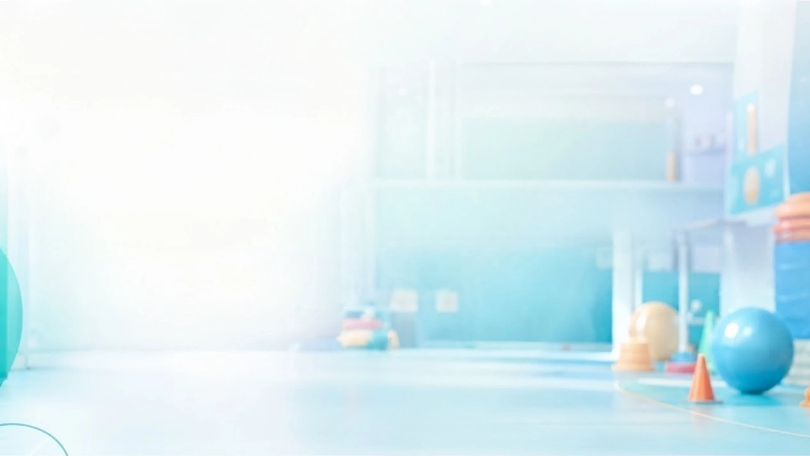
למה דווקא טיפול בקבוצה?
למה דווקא טיפול בקבוצה?
רוב האתגרים של ילדים קורים מול ילדים ואנשים אחרים — בבית, בגן, בבית הספר ובמשחק.
הקבוצה מאפשרת לתרגל בזמן אמת המתנה לתור, שיתוף פעולה, קבלת גבולות, התמודדות עם הפסד, ביטחון חברתי ותקשורת.
המדריכה נמצאת שם כדי לתווך, לעודד ולעזור לילד ללמוד דרך חדשה להתמודד.
המתנה לתור
שיתוף פעולה
ביטחון חברתי
תקשורת
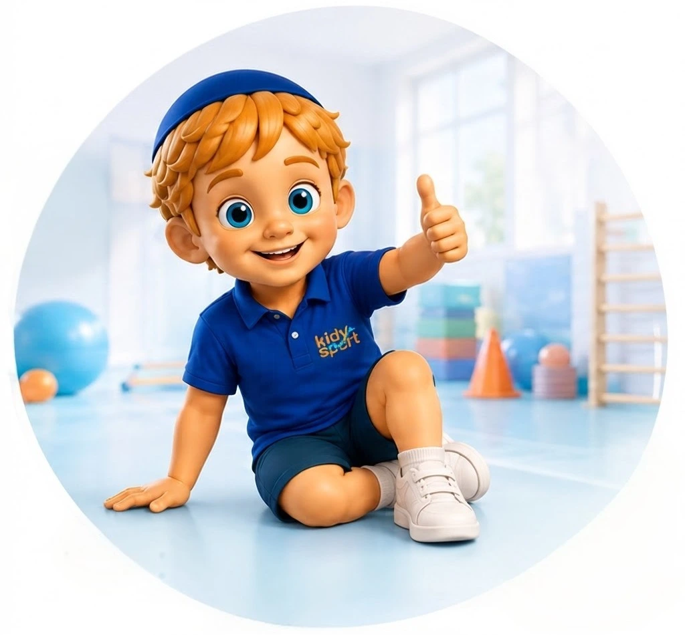
נעים להכיר,
טובה טייכמאן
אני מייסדת ומנהלת את מכוני קידיספורט ועוסקת בתחום הספורט הטיפולי קרוב לעשור.
את קידיספורט הקימתי מתוך הרצון ליצור עבור ילדים דרך טיפולית אחרת!
חווייתית, פעילה, נעימה ומחוברת לעולם שלהם.
כיום אני מנהלת את הצוות המקצועי, עוברת על מערכי השיעור והדוחות ומלווה את המדריכות בהדרכה שבועית, כדי לוודא שכל ילד מקבל מעקב וטיפול מדויק.
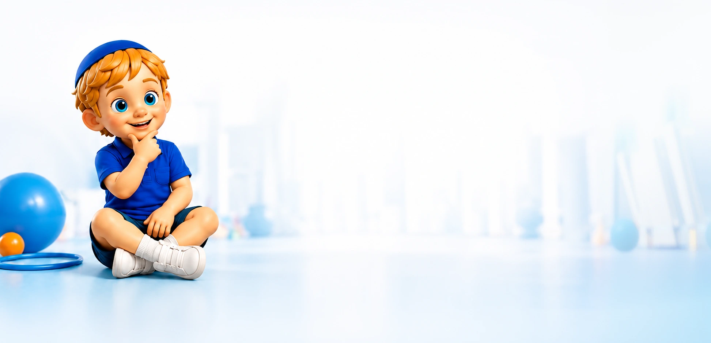
שאלות נפוצותאנחנו כאן בשבילכם
ריכזנו עבורכם את השאלות שאנחנו נשאלים הכי הרבה.
לא מצאתם תשובה? נשמח לדבר איתכם!
איך הטיפול אישי אם הוא בקבוצה?
לכל ילד יש תוכנית ומטרות משלו. אותה פעילות יכולה לקדם אצל כל ילד דברים שונים.
איך הטיפול אישי אם הוא בקבוצה?
לכל ילד יש תוכנית ומטרות משלו. אותה פעילות יכולה לקדם אצל כל ילד דברים שונים.
למה לא טיפול פרטני?
לכל ילד יש תוכנית ומטרות משלו. אותה פעילות יכולה לקדם אצל כל ילד דברים שונים.
מה ההבדל מחוג ספורט רגיל?
לכל ילד יש תוכנית ומטרות משלו. אותה פעילות יכולה לקדם אצל כל ילד דברים שונים.


יש לכם שאלה נוספת?
נשמח לענות ולהתאים את הטיפול המדויק עבור הילד/ה שלכם.
לעוד שאלות דברו איתנו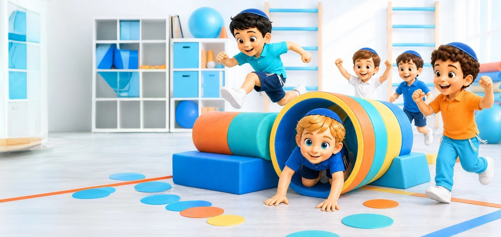
מקום שבו ילדים יכולים
להצליח ולהתחזק
השאירו פרטים ונתחזור אליכם.
נשמע על הילד, נענה על שאלות, ונבדוק יחד אם קידיספורט יכול להתאים לו
פרטי יצירת קשר
02-500-9293
info@kidysport.co.il
א’ - ה’ : 8:00 - 18:00
ו’ : 8:00 - 12:00
תודה על פניתכם, נחזור אליכם בהקדם
הפניה לא נשלחה, בדוק את הפרטים, ונסה שנית